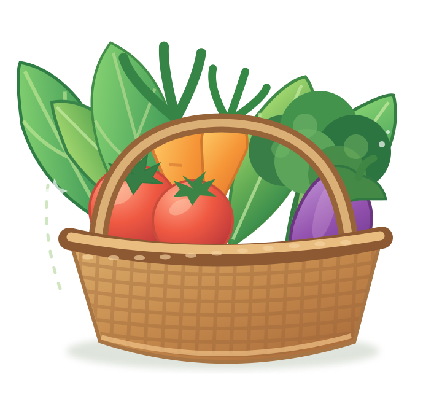
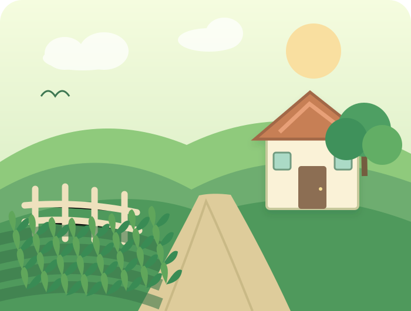

Chọn lựa kỹ càng
Ưu tiên nguồn rau tươi ngon
Rau củ tươi ngon, chọn lọc kỹ mỗi ngày. Cho bữa cơm nhà thêm tròn vị, cho cuộc sống thêm xanh.

Ưu tiên nguồn rau tươi ngon
Nhận rau ngay trước cửa nhà
Ngon lành cho mỗi bữa ăn
Đóng gói bằng cả sự tận tâm
Chọn loại rau củ yêu thích, Lá Lành chuẩn bị phần còn lại.
Những lựa chọn tươi xanh cho thực đơn hôm nay.

Không cần điều gì quá cầu kỳ. Chỉ một bó rau xanh giòn, vài trái cà chua chín mọng và một bữa cơm ấm cúng đã đủ làm nên một ngày dễ thương.
Lá Lành mong việc chọn mua rau củ mỗi ngày trở nên đơn giản, vui vẻ và nhiều cảm hứng hơn.